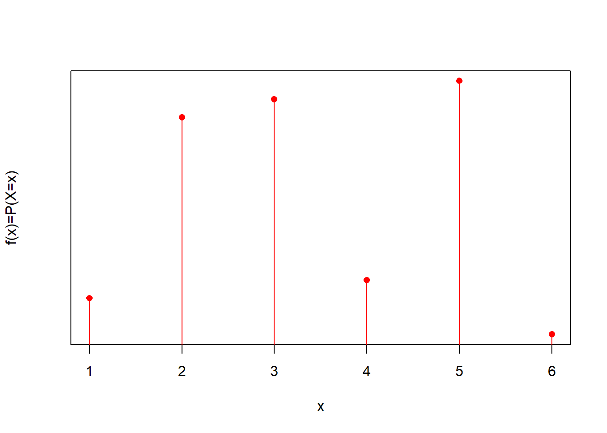

Chapter 5 Discrete Random Variables

5.3 Random variable
Definition:
A random variable is a function that assigns a real number to each outcome in the sample space of a random experiment.
- Most commonly a random variable is the value of the measurement of interest that is made in a random experiment.
A random variable can be:
- Discrete (nominal, ordinal)
- Continuous (interval, ratio)
5.4 Random variable
A value (or outcome) of a random variable is one of the possible numbers that the variable can take in a random experiment.
We write the random variable in capitals.
Example:
If \(X \in \{0,1\}\), we then say \(X\) is a random variable that can take the values \(0\) or \(1\).
Observation of a random variable
- An observation is the acquisition of the value of a random variable in a random experiment
Example:
1 0 0 1 0 1 0 1 1
The number in bold is an observation of \(X\)
5.5 Events of observing a random variable
- \(X=1\) is the event of observing the random variable \(X\) with value \(1\)
- \(X=2\) is the event of observing the random variable \(X\) with value \(2\)
…
In general:
\(X=x\) is the event of observing the random variable \(X\) with value \(x\) (little \(x\))
Any two values of a random variable define two mutually exclusive events.
5.6 Probability of random variables
We are interested in assigning probabilities to the values of a random variable.
We have already done this for the dice: \(X \in \{1,2,3,4,5,6\}\) (classical interpretation of pribability)
| \(X\) | Probability |
|---|---|
| \(1\) | \(P(X=1)=1/6\) |
| \(2\) | \(P(X=2)=1/6\) |
| \(3\) | \(P(X=3)=1/6\) |
| \(4\) | \(P(X=4)=1/6\) |
| \(5\) | \(P(X=5)=1/6\) |
| \(6\) | \(P(X=6)=1/6\) |
5.7 Probability functions
- We can write the probability table
- plot it

- or write as the function
\[f(x)=P(X=x)=1/6\]
5.8 Probability functions
We can create any type of probability function if we respect the probability rules:

5.9 Probability functions
For a discrete random variable \(X \in \{x_1 , x_2 , .. , x_M\}\) , a probability mass function
is always positive
- \(f(x_i)\geq 0\)
is used to compute probabilities
- \(f(x_i)=P(X=x_i)\)
and its sum over all the values of the variable is \(1\):
- \(\sum_{i=1}^M f(x_i)=1\)
5.10 Probability functions
Note that the definition of \(X\) and its probability mass function is general without reference to any experiment. The functions live in the model (abstract) space.
\(X\) and \(f(x)\) are abstract objects that may or may not map to an experiment
We have the freedom to construct them as we want as long as we respect their definition.
They have some properties that are derived exclusively from their definition.
5.11 Example: Probability mass function
Consider the following random variable \(X\) over the outcomes
| outcome | \(X\) |
|---|---|
| \(a\) | 0 |
| \(b\) | 0 |
| \(c\) | 1.5 |
| \(d\) | 1.5 |
| \(e\) | 2 |
| \(f\) | 3 |
If each outcome is equally probable then what is the probability mass function of \(x\)?
5.12 Probability table for equally likely outcomes
| outcome | Probability(outcome) |
|---|---|
| \(a\) | \(1/6\) |
| \(b\) | \(1/6\) |
| \(c\) | \(1/6\) |
| \(d\) | \(1/6\) |
| \(e\) | \(1/6\) |
| \(f\) | \(1/6\) |
5.13 Probability table for \(X\)
| \(X\) | \(f(x)=P(X=x)\) |
|---|---|
| \(0\) | \(P(X=0)=2/6\) |
| \(1.5\) | \(P(X=1.5)=2/6\) |
| \(2\) | \(P(X=2)=1/6\) |
| \(3\) | \(P(X=3)=1/6\) |
We can compute, for instance, the following probabilities for events on the values of \(X\)
- \(P(X>3)\)
- \(P(X=0\, \cup \, X=2 )\)
- \(P(X \leq 2)\)
5.14 Example
Probability model:
Consider the following experiment: In one urn put \(8\) balls and:
- mark \(1\) ball with \(-2\)
- mark \(2\) balls with \(-1\)
- mark \(2\) balls with \(0\)
- mark \(2\) balls with \(1\)
- mark \(1\) ball with \(2\)
experiment: Take one ball and read the number.
| \(X\) | \(P(X=x)\) |
|---|---|
| \(-2\) | \(1/8=0.125\) |
| \(-1\) | \(2/8=0.25\) |
| \(0\) | \(2/8=0.25\) |
| \(1\) | \(2/8=0.25\) |
| \(2\) | \(1/8=0.125\) |
5.15 Example
Consider another experiment where we do not know what is in the previous urn. We draw a ball \(30\) times, write its nuber and put it back in the urn.
we do not know what the primary events with equal probabilities are.
we then estimate the probability mass function from the relative frequencies observed for a random variable
| \(X\) | \(f_i\) |
|---|---|
| \(-2\) | \(0.132\) |
| \(-1\) | \(0.262\) |
| \(0\) | \(0.240\) |
| \(1\) | \(0.248\) |
| \(2\) | \(0.118\) |
5.16 Probabilities and frequencies
For computing the relative frequencies \(f_i\) you have to
- repeat the experiment \(N\) times (you have to put the ball back in the urn each time) and at the end compute
\[f_i=n_i/N\]
We are assuming that:
\[lim_{N \rightarrow \infty} f_i = f(x_i)=P(X=x_i)\]
5.17 Probabilities and relative frequencies

- In this example we know the probability model \(f(x)=P(X=x)\) by design.
- We never observe \(f(x)\)
- We can use relative frequencies to estimate the probabilities \[f_i = \hat{f}(x_i)=\hat{P}(X=x_i)\] (\(f_i\) depends on \(N\))
5.18 Mean and Variance
The probability mass functions \(f(x)\) have two main properties
- its center
- its spread
We can ask,
around which values of \(X\) the probability concentrated?
How dispersed are the values of \(X\) in relation to their probabilities?

5.20 Mean
Remember that the average in terms of the relative frequencies of the values of \(x_i\) (categorical ordered outcomes) can be written as
\[\bar{x}= \sum_{i=1}^M x_i \frac{n_i}{N}=\sum_{i=1}^M x_i f_i\]
Definition
The mean (\(\mu\)) or expected value of a discrete random variable \(X\), \(E(X)\), with mass function \(f(x)\) is given by
\[ \mu = E(X)= \sum_{i=1}^M x_i f(x_i) \]

It is the center of gravity of the probabilities: The point where probability loadings on a road are balanced
5.21 Example: Mean
What is the mean of \(X\) if its probability mass function \(f(x)\) is given by
\(P(X=0)=1/16\) \(P(X=1)=4/16\) \(P(X=2)=6/16\) \(P(X=3)=4/16\) \(P(X=4)=1/16\)

\[ \mu =E(X)=\sum_{i=1}^m x_i f(x_i) \]
\(E(X)=\)0 * 1/16 + 1 * 4/16 + 2 * 6/16 + 3 * 4/16 + 4 * 1/16 =2
5.22 Mean and Average
- The mean \(\mu\) is the centre of grevity of the probability mass function it does not change
For instance for
| \(X\) | \(P(X=x)\) |
|---|---|
| \(-2\) | \(1/8=0.125\) |
| \(-1\) | \(2/8=0.25\) |
| \(0\) | \(2/8=0.25\) |
| \(1\) | \(2/8=0.25\) |
| \(2\) | \(1/8=0.125\) |
- The average \(\bar{x}\) is the centre of gravity of the observations (relative frequencies) it changes with different data
For instance for
| \(X\) | \(f_i\) |
|---|---|
| \(-2\) | \(0.132\) |
| \(-1\) | \(0.262\) |
| \(0\) | \(0.240\) |
| \(1\) | \(0.248\) |
| \(2\) | \(0.118\) |
5.23 Variance
In similar terms we define the mean squared distance from the mean:
Definition
The variance, written as \(\sigma^2\) or \(V(X)\), of a discrete random variable \(X\) with mass function \(f(x)\) is given by
\[\sigma^2 = V(X)= \sum_{i=1}^M (x_i-\mu)^2 f(x_i)\]
\(\sigma=\sqrt{V(X)}\) is called the standard deviation of the random variable
Think of it as the moment of inertia of probabilities about the mean.
5.24 Example: Variance
What is the variance of \(X\) if its probability mass function \(f(x)\) is given by
\(P(X=0)=1/16\) \(P(X=1)=4/16\) \(P(X=2)=6/16\) \(P(X=3)=4/16\) \(P(X=4)=1/16\)
\[\sigma^2 =V(X)=\sum_{i=1}^m (x_i-\mu)^2 f(x_i)\]
\(V(X)=\)(0-2)\(^2\)* 1/16 + (1-2)\(^2\)* 4/16 + (2-2)\(^2\)* 6/16 + (3-2)\(^2\)* 4/16 + (4-2)\(^2\)* 1/16 =1
\[V(X)=\sigma^2=1\] \[\sigma=1\]
5.25 Functions of \(X\)
Definition
For any function \(h\) of a random variable \(X\), with mass function \(f(x)\), its expected value is given by
\[ E[h(X)]= \sum_{i=1}^M h(x_i) f(x_i) \]
This is an important definition that allows us to prove three important properties of the median and variance:
The mean of a linear function is the linear function fo the mean: \[E(a\times X +b)= a\times E(X) +b\] for \(a\) and \(b\) scalars (numbers).
The variance of a linear function of \(X\) is:\[V(a\times X +b)= a^2\times V(X)\]
The variance about the origin is the variance about the mean plus the mean squared: \[E(X^2)=V(X)+E(X)^2\]
5.26 Example: Variance about the origin
What is the variance \(X\) about the origin, \(E(X^2)\), if its probability mass function \(f(x)\) is given by
\(P(X=0)=1/16\) \(P(X=1)=4/16\) \(P(X=2)=6/16\) \(P(X=3)=4/16\) \(P(X=4)=1/16\)
\[E(X^2) =\sum_{i=1}^m x_i^2 f(x_i)\]
\(E(X^2)=\)(0)\(^2\)* 1/16 + (1)\(^2\)* 4/16 + (2)\(^2\)* 6/16 + (3)\(^2\)* 4/16 + (4)\(^2\)* 1/16 =5
We can also verify:
\[E(X^2)=V(X)+E(X)^2\]
\(5=1+2^2\)
5.27 Probability distribution
Definition:
The probability distribution function is defined as
\[F(x)=P(X\leq x)=\sum_{x_i\leq x} f(x_i) \]
That is the accumulated probability up to a given value \(x\)
\(F(x)\) satisfies:
- \(0\leq F(x) \leq 1\)
- If \(x \leq y\), then \(F(x) \leq F(y)\)
5.28 Example: Probability distribution
For the probability mass function:
\(f(0)=P(X=0)=1/16\) \(f(1)=P(X=1)=4/16\) \(f(2)=P(X=2)=6/16\) \(f(3)=P(X=3)=4/16\) \(f(4)=P(X=4)=1/16\)
The probability distribution is:
\[ F(x)= \begin{cases} 1/16,& \text{if } x < 1\\ 5/16,& 1\leq x < 2\\ 11/16,& 2\leq x < 3\\ 15/16,& 3\leq x < 4\\ 16/16,& x \leq 5\\ \end{cases} \]
For\(X \in \mathbb{Z}\)

5.30 Probability function and Probability distribution
Compute the mass probability function of the following probability distribution:
\(F(0)=1/16\), \(F(1)=5/16\), \(F(2)=11/16\), \(F(3)=15/16\), \(F(4)=16/16\),
Let’s work backward.
\(f(0)=F(0)=1/16\) \(f(1)=F(1)-f(0)=5/32-1/32=4/16\) \(f(2)=F(2)-f(1)-f(0)=F(2)-F(1)=6/16\) \(f(3)=F(3)-f(2)-f(1)-f(0)=F(3)-F(2)=4/16\) \(f(4)=F(4)-F(3)=1/16\)
5.31 Probability function and Probability distribution
The Probability distribution is another way to specify the probability of a random variable
\[f(x_i)=F(x_i)-F(x_{i-1})\]
with
\[f(x_1)=F(x_1)\]
for \(X\) taking values in \(x_1 \leq x_2 \leq ... \leq x_n\)
5.32 Quantiles
We define the q-quantile as the value \(x_{p}\) under which we have accumulated q*100% of the probability
\[q=\sum_{i=1}^p f(x_i) = F (x_p)\]
- The median is value \(x_m\) such that \(q=0.5\)
\[F(x_{m})=0.5\]
- The \(0.05\)-quantile is the value \(x_{r}\) such that \(q=0.05\)
\[F(x_{r})=0.05\]
- The \(0.25\)-quantile is first quartile the value \(x_{s}\) such that \(q=0.25\)
\[F(x_{s})=0.25\]
5.33 Summary
| quantity names | model (unobserved) | data (observed) |
|---|---|---|
| probability mass function // relative frequency | \(f(x_i)=P(X=x_i)\) | \(f_i=\frac{n_i}{N}\) |
| probability distribution // cumulative relative frequency | \(F(x_i)=P(X \leq x_i)\) | \(F_i=\sum_{k\leq i} f_k\) |
| mean // average | \(\mu=E(X)=\sum_{i=1}^M x_i f(x_i)\) | \(\bar{x}=\sum_{j=1}^N x_j/N\) |
| variance // sample variance | \(\sigma^2=V(X)=\sum_{i=1}^M (x_i-\mu)^2 f(x_i)\) | \(s^2=\sum_{j=1}^N (x_j-\bar{x})^2/(N-1)\) |
| standard deviation // sample sd | \(\sigma=\sqrt{V(X)}\) | \(s\) |
| variance about the origin // 2nd sample moment | \(E(X^2)=\sum_{i=1}^M x_i^2 f(x_i)\) | \(m_2= \sum_{j=1}^N x_j^2/n\) |
Note that:
- \(i=1...M\) is an outcome of the random variable \(X\).
- \(j=1...N\) is an observation of the random variable \(X\).
Properties:
- \(\sum_{i=1...N} f(x_i)=1\)
- \(f(x_i)=F(x_i)-F(x_{i-1})\)
- \(E(a\times X +b)= a\times E(X) +b\); for \(a\) and \(b\) scalars.
- \(V(a\times X +b)= a^2\times V(X)\)
- \(E(X^2)=V(X)+E(X)^2\)